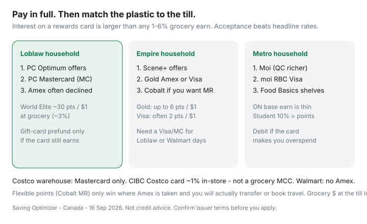

Food & Groceries · Canada
How to pay for groceries in Canada for maximum rewards (without debt)
Rewards optimization without cash-flow discipline is how a 3% grocery card becomes 20% interest. Canadian tills add a second trap: the “best” card on a blog is often American Express, and many Loblaw banners will not take it. Maximum rewards here means pay in full, then match the network to the banner, then stack loyalty. Anything else is a hobby funded by the revolving line.
This is the framework: the pay-in-full rule, acceptance, loyalty accelerators versus flexible points, gift-card prefunding, when debit is the grown-up choice, and sample stacks for Loblaw, Sobeys, and Metro households. It is not credit advice. It is a till worksheet.
Disclosure: PC Financial cards, Scotiabank Scene+ cards, American Express Cobalt, the moi RBC Visa, and cashback portals are offer types. Saving Optimizer may earn a commission if we later add partner links. We do not currently claim issuer partnerships. Confirm fees, caps, and exclusions on the issuer’s site. Never apply to carry a grocery balance.
Key takeaways
- Pay the statement in full. Autopay from a chequing account that already holds the grocery float.
- Acceptance first: Loblaw and Walmart are hostile to Amex; Costco warehouse is Mastercard-only.
- Co-branded accelerators (PC, Scene+, Moi) beat generic 1% when you already shop that family.
- Flexible points (Cobalt MR) win only where Amex works and you will use the currency.
- Gift-card stacks are optional and fragile. Debit wins if points change your behaviour.
Pay-in-full rule first
Flyer savings, PC points, Executive 2%, and portal Cash Back are all smaller than a month of revolving interest. If a grocery card tempts you to spend more, it is not a rewards tool. It is a loan with extra steps. Put groceries on a card only if the amount is already in chequing and autopay will clear it.
Statistics Canada’s 2023 store-food average was $8,659 a year (Daily, 21 May 2025). Three percent of that is about $260 — real, and still less than carrying even a slice of the same bill at 20.99%. The non-negotiable rule in the card guide is the whole article.

Match card to banner acceptance
As of public 2026 roundups and shopper reports (verify at your till):
- Loblaw grocery banners: Visa and Mastercard. Amex commonly declined at No Frills, Superstore, Maxi, and similar.
- Empire and many Metro banners: often all three networks.
- Walmart Canada: Visa/Mastercard, not Amex. Grocery MCC is inconsistent.
- Costco warehouse: Mastercard only. Online Costco.ca follows Costco’s listed methods.
A 6% Scene+ Gold Amex at a store that refuses the card is 0%. Carry the backup Visa or Mastercard on mixed weeks.
Loyalty accelerators vs flexible points cards
| Currency | When it wins | When it loses |
|---|---|---|
| PC Optimum via PC Financial MC | No Frills / Superstore / Maxi households; ~3% World Elite at grocery | Sobeys weeks; Amex blogs |
| Scene+ via Scotia Visa or Gold Amex | FreshCo / Sobeys / Safeway; 2% or ~6% before fee | Loblaw tills that decline Amex |
| Moi via moi RBC Visa | Quebec Metro + Jean Coutu 2x story; no annual fee | Ontario Metro base earn is thin; Food Basics is offers-first |
| Amex Cobalt MR | Metro/Sobeys/IGA if you value travel transfers | No Frills; people who never book travel |
| CIBC Costco Mastercard | Warehouse + Costco gas | Expecting a grocery MCC; ~1% in-store |
Load the matching app every Sunday. Points you forget to scan are a 0% card. Program mechanics: PC vs Scene+ vs Moi, Scene+ grocery burn, Moi ON vs QC.
Gift card prefunding strategies
A portal gift card can add ~2% when (1) the Gift Card Shop rate is real, (2) the funding card still earns, and (3) you already planned that grocery spend. It is a downgrade when you already earn ~3–6% at the till, or when gift cards code as excluded. Full rules: grocery gift cards with cashback.
Never prefund on a card you might revolve. You would be paying interest on groceries you have not even eaten.
Debit and cash when behavioural control matters more
If rewards make you “treat yourself” in the centre aisle, use debit. If a partner spends more when a card is out, use a joint debit and a written list. Cash still works at most discounters; it does not work at some self-checkouts and never earns points — that is the point.
Hybrid: no-fee card in a drawer, autopay, treated psychologically as debit. That keeps PC or Scene+ accelerators without the dopamine till.
Sample stacks for Loblaw, Sobeys, Metro shoppers
| Household | Scan | Pay (in full) | Optional extra |
|---|---|---|---|
| Loblaw / No Frills | PC Optimum offers | PC Financial Mastercard | Rakuten grocery gift card only if it beats ~3% and codes |
| Empire / FreshCo | Scene+ offers | Scene+ Visa, or Gold Amex if fee is covered | Voilà only when fees do not eat the points |
| Metro QC | Moi + offers | moi RBC Visa (2x at participating Metro) | Jean Coutu burn path |
| Metro / Food Basics ON | Moi offers; student 10% if eligible | moi RBC Visa or a simple Visa/MC you pay off | Do not skip Food Basics for Ontario base earn |
| Costco monthly | Membership card | CIBC Costco Mastercard | Executive 2% only after eligible-spend math |
| Mixed banners, modest spend | One loyalty program | One no-fee card | Skip a second annual fee |
Put the chosen card next to the loyalty app in the Sunday loop. One banner most weeks, Costco once a month if the split works — cart split. That is maximum rewards. Everything else is collecting plastic.
Sources & date stamps
- Issuer pages: PC Financial, Scotiabank Scene+ Visa and Gold Amex, moi RBC Visa, Amex Cobalt, CIBC Costco Mastercard (fees and earn, reviewed as public 2026 materials on 16 Sep 2026).
- Ratehub grocery loyalty comparison (2026) for PC / Scene+ / Moi redemption values.
- Statistics Canada, Survey of Household Spending 2023 (Daily, 21 May 2025): $8,659 food from stores — used only as scale for why interest dwarfs 3%.
- Saving Optimizer card and loyalty guides (16 Sep 2026) for acceptance patterns — still verify at your till.
Frequently asked questions
What is the best way to pay for groceries in Canada?
Pay with a card that is accepted at your discount banner, that you pay in full, and that feeds the loyalty program you already scan. A 6% card you revolve is a high-interest loan.
Does it matter which grocery store I use if I have a great card?
Yes. A 10–15% higher shelf price swamps a 3–6% earn. Choose the discounter first, then the plastic.
Should I buy grocery gift cards to manufacture spend?
Only after a small test shows the card still earns on gift cards and the portal math beats paying in store. Many issuers exclude gift cards. Never prefund if you carry a balance.
Is debit better than a rewards card?
If rewards make you spend more, or you would revolve, yes. A chequing autopay to a no-fee card you treat like debit is the hybrid that keeps points without the behavioural leak.
Can I use Amex at No Frills?
Often no. Many Loblaw grocery banners decline American Express. Carry Mastercard or Visa for Loblaw and Walmart. Costco warehouses are Mastercard-only.